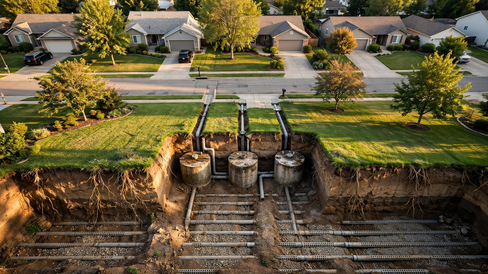

July 25, 2026
One in Four American Homes Treats Its Own Sewage. A Model Predicts Which Systems Will Fail. Nobody Tells the Buyer.

A plumbing company in rural Chautauqua County, New York, reviewed 300 service records this summer and found that 60 percent of septic systems in the area were overdue for pumping, with the average gap between services stretching to 5.8 years, nearly double the recommended interval. Homeowners who skipped routine maintenance paid an average of $9,200 in preventable repairs over the life of their system, while those who followed the schedule paid $3,300, a difference driven almost entirely by drain field failures that account for 71 percent of all septic repair costs in the dataset.
Maintained systems lasted 27 years before major failure. Neglected ones died at 16.
Nobody told the next buyer which kind they were getting.
Buried Infrastructure, Buried Risk
Twenty-six million American homes treat their own wastewater through on-site systems, mostly conventional septic tanks connected to drain fields buried in the backyard, according to EPA data released during its SepticSmart Week campaign. Roughly one in four households operates this way, and the share is growing: more than 30 percent of new homes built since the early 2000s have used septic rather than connecting to municipal sewer, a trend documented in a 2024 study published in npj Clean Water by researchers at Georgia's Odum School of Ecology and College of Engineering.
When these systems fail, the economics are punishing. Michigan's Department of Environment, Great Lakes, and Energy places replacement costs between $8,000 and $30,000, depending on site conditions, soil characteristics, and system type. Drain field replacement alone runs $8,000 to $15,000, a catastrophic expense for a component that would have been saved by $350 worth of routine pumping, according to the McCandless data. And 56 percent of Americans cannot cover a $1,000 emergency, let alone absorb a five-figure infrastructure failure in a system they may not have known existed beneath their lawn when they signed the purchase agreement.
Predicting Failure From Public Data
Researchers at the University of Georgia built a hierarchical Bayesian model using county-level failure data from the state, where the proportion of on-site wastewater systems reported as needing repair climbed from 16 percent in 2008 to 32 percent in 2009 and has hovered near 30 percent since, a trajectory that tracks almost perfectly with the aging of the state's installed base, which now averages more than 20 years old and is trending toward 30.
Four predictors drive the model, and every one of them comes from a publicly available federal dataset: recent extreme precipitation from NOAA archives, soil hydraulic conductivity from USDA's SSURGO soil surveys, topographic slope from USGS digital elevation models, and median housing value from Census Bureau data. Two group-level attributes, median age and median income, account for county-to-county variation in residents' capacity to maintain or replace aging systems.
Validation accuracy reached 70 percent for the hierarchical specification, compared to 59 percent for Random Forest, 57 percent for Support Vector Machines, and 55 percent for a pooled Bayesian model that ignored geographic structure. Hierarchy mattered because the same predictor behaved differently in different places: a model trained only on extreme precipitation achieved 68.43 percent accuracy in the hierarchical specification, a 26 percent improvement over the pooled version using the same variable, while soil conductivity dominated in pooled models where geographic context was flattened away.
After training on Georgia data, the researchers used the model to infer failure risk across the Southeastern United States, producing county-level maps for regions where no failure data had previously been collected, and the maps came with quantified uncertainty bands that grew wider as geographic distance from the training data increased.
What Buyers Actually Learn Before Signing
When you purchase a home on a septic system, the listing tells you two things: that a septic system exists, and whether the wastewater arrangement is septic or sewer. In most states, that exhausts the information available without commissioning a specialized inspection that costs $250 to $500 and is separate from the standard home inspection, which typically does not evaluate septic systems at all.
Massachusetts runs the most comprehensive program in the country through its Title 5 time-of-transfer requirement, which mandates a septic evaluation before any residential property changes hands. That program discovered a 20 percent failure rate statewide, meaning one in five systems that owners believed were functioning passed sewage into groundwater, pooled on the surface, or operated below design capacity without anyone noticing until the inspector arrived.
Most states require substantially less, and several require nothing. No state requires a predictive risk score. Inspections produce a binary verdict, pass or fail, that captures current function without projecting future performance based on the soil, rainfall, and maintenance trajectory that will determine whether the system survives another decade or collapses next winter. An algorithm using the same four data points available for any parcel in the country could produce a failure probability with uncertainty bounds, precisely the kind of signal that lets a buyer negotiate a price reduction, budget for replacement in year five, or walk away entirely before committing to a property with a buried liability that nobody quantified.
Why Nobody Has Built This Product
Septic system data lives in county health departments scattered across thousands of jurisdictions with no standardized reporting format, no common definition of failure, and no obligation to digitize records, a fragmentation problem so severe that the Georgia researchers spent substantial effort cleaning and structuring permit, inspection, and replacement data before a single model could be trained on it. Replicating that work in 48 additional states, each with its own permitting vocabulary, record-keeping systems, and regulatory framework, is a data engineering problem that must be solved before the machine learning even starts.
Real estate disclosure law compounds the barrier because obligations attach to known defects, not statistical probabilities, and "your septic system has a 40 percent modeled failure probability based on soil conductivity and precipitation patterns in your county" is a prediction about future performance, not a known current condition that triggers mandatory disclosure under any state's existing statute. Disclosure law has not confronted the question of what happens when an algorithm knows something the seller does not, a gap that will widen as predictive models proliferate across every dimension of property risk from flood exposure to foundation movement to the buried wastewater system decomposing beneath the backyard.
And the constituencies that could push for change are too diffuse to organize. Twenty-six million homeowners on septic do not form a political bloc, their infrastructure is invisible and silent until sewage pools in the yard, and the professionals who service those systems, the county health officers who permit them, and the realtors who sell the homes above them each operate under incentive structures that point away from transparency rather than toward it, because quantifying a risk that was previously invisible creates liability for everyone who failed to quantify it before.
Taking the Counterargument Seriously
A 70 percent accuracy model means 30 percent misclassification, and the errors cut in both directions: false positives that brand functional systems as high-risk and false negatives that let failing ones pass undetected, either of which could cause real financial harm to buyers, sellers, or both. County-level covariates cannot detect whether someone replaced the drain field two years ago, upgraded from a conventional gravity system to an aerobic treatment unit, or maintains a service contract with a licensed inspector who pumps the tank every three years like clockwork, which means the model captures landscape risk without seeing individual behavior, the single most important determinant of whether any given system survives or fails.
Rural communities already face appraisal challenges, thin buyer pools, and financing constraints that make any additional friction in the transaction process a genuine burden rather than a theoretical concern. A septic risk score attached to a listing could depress property values across entire counties where every home operates on septic and most systems work fine, creating a systematic penalty for geography rather than condition, punishing homeowners who maintain their systems perfectly for the statistical sins of neighbors who do not.
Georgia's soils, rainfall patterns, and housing stock also do not transfer cleanly to every state, a limitation the researchers acknowledge by widening uncertainty bands for out-of-state inference. Deploying the model nationally without region-specific training data would produce risk maps that look precise on a screen but carry margins of error large enough to render individual parcel scores functionally meaningless.
Three Interventions That Require No New Algorithms
Standardized septic system data would solve the training problem within a decade. If county health departments reported permits, inspections, failures, and system characteristics in a common digital format with a common definition of what constitutes failure, the dataset the Georgia researchers assembled manually would assemble itself across every participating state, and the EPA has advocated for exactly this standardization for years without securing the funding, the regulatory mandate, or the local cooperation to make it happen at scale.
Point-of-sale risk disclosure would solve the information problem immediately. Not a mandate to run predictive models or install sensors, but a requirement that buyers receive system age, maintenance history, last pumping date, soil type classification, and any prior inspection results before closing, essentially the same categories of information that Massachusetts already requires through Title 5 and that any competent buyer's agent would want to review before letting a client commit to a property with a $30,000 buried liability that has no warranty, no performance guarantee, and no visible indicator of condition.
A consumer product would solve the access problem cheaply. A parcel-level risk estimate sourced from NOAA precipitation, USDA soil conductivity, USGS slope, and Census housing data, delivered as a browser overlay, a standalone report, or a line item in a Zillow listing page, would give 26 million homeowners and prospective buyers something they currently lack entirely: a quantitative signal about the infrastructure under their feet that is better than nothing, even if 70 percent accuracy falls well short of the certainty anyone would want before writing a check for a property whose most expensive hidden system has no score, no rating, and no public record of performance.
What This Analysis Cannot Show
Every data point in the npj Clean Water model operates at county level, not parcel level, so individual system age, maintenance history, technology type, and construction quality are invisible to the algorithm, and those factors likely matter more than landscape covariates for any specific property where the homeowner either maintained the system rigorously or ignored it entirely. Georgia's training data may not generalize to arid Western states, frozen Northern soils, or coastal flood zones without region-specific recalibration that has not been performed and may require years of standardized data collection before it can be. A 70 percent classification accuracy using a 0.5 probability threshold is meaningfully better than the current standard, which is no score at all, but it remains far from diagnostic and should supplement a physical inspection rather than substitute for one.
Well-maintained systems on suitable soils with adequate setbacks from water sources perform reliably for decades, and this analysis does not argue otherwise. But the buyer who knows that is the buyer who paid for a $500 septic inspection and understood the results, who asked about system age and pumping history and soil percolation rates before making an offer, and who treated the buried infrastructure beneath the backyard with the same scrutiny applied to the roof, the foundation, and the electrical panel. For everyone else, the septic system remains what it has always been: a five-figure liability wrapped in silence, decomposing at a rate that correlates with rainfall, soil conductivity, and neglect in patterns a model can detect and a listing will not reveal.